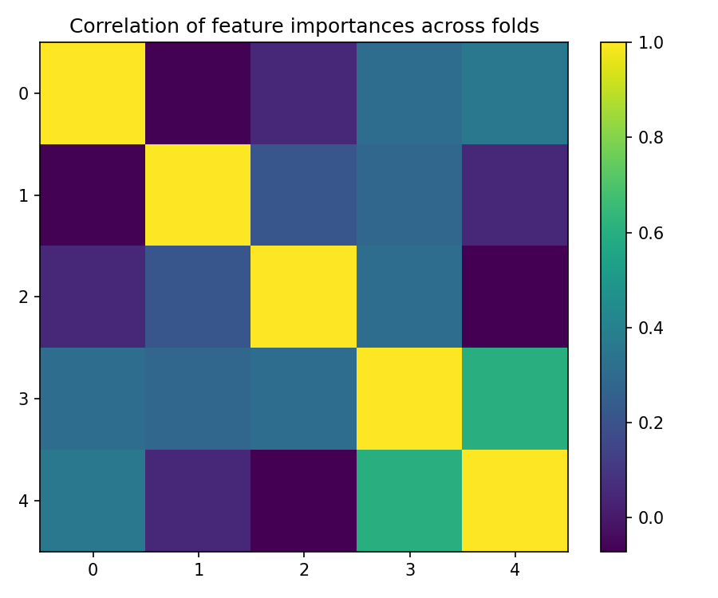

Cross-Validation Results: Automatic Report and Interpretation
Metrics by Fold
| Fold |
R2 |
MSE |
RMSE |
MAE |
| 1 |
-0.554468 |
1181.712857 |
34.376051 |
29.800000 |
| 2 |
-1.293901 |
490.640000 |
22.150395 |
20.100000 |
| 3 |
-7.845024 |
859.932917 |
29.324613 |
27.008333 |
| 4 |
-2.983554 |
398.355417 |
19.958843 |
16.175000 |
| 5 |
-0.306958 |
1056.457500 |
32.503192 |
29.516667 |
Feature Importance (mean ± std)
| feature |
mean_importance |
std_importance |
| CL |
0.154855 |
0.033803 |
| FR |
0.115620 |
0.046047 |
| TR |
0.114554 |
0.062108 |
| FL |
0.113444 |
0.044915 |
| CR |
0.110412 |
0.036255 |
| PR |
0.097390 |
0.021010 |
| PL |
0.078768 |
0.045904 |
| TL |
0.075453 |
0.026766 |
| OL |
0.073378 |
0.046260 |
| OR |
0.066124 |
0.014310 |
Main Plots
feature_importances_mean_std.png
feature_importances_correlation_heatmap.png

best_fold_5_feature_importances.png
True vs Predicted Scatter Plots (by fold)

Residual Plots (by fold)
Automatic Interpretation
Overall Performance
- Mean R² across folds: -2.597 (± 3.115).
- Average error: RMSE = 27.663, MAE = 24.520 (same unit as target variable).
Model Stability
- R² variability across folds is high (std = 3.115).
- Average feature importance stability across folds: 0.038 (lower = more stable).
Most Important Features (average across all folds)
- Top-3: CL (0.155), FR (0.116), TR (0.115).
Best Fold
- Best fold: 5 with R² = -0.307.
- In the best fold, the most important features are: CR (0.170), FL (0.149), FR (0.146).
Residual Analysis (best fold)
- Residuals–predictions correlation: -0.521 (0 ≈ absence of linear bias).
- |Residuals|–predictions correlation: 0.741 (positive values indicate possible heteroscedasticity).
- Outliers (|res| > 3·std): 0.